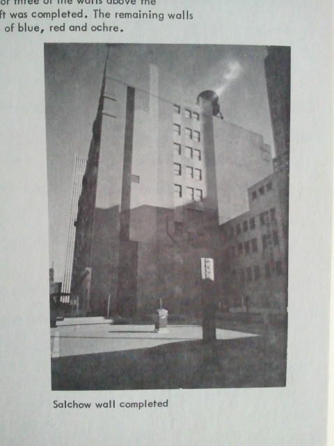
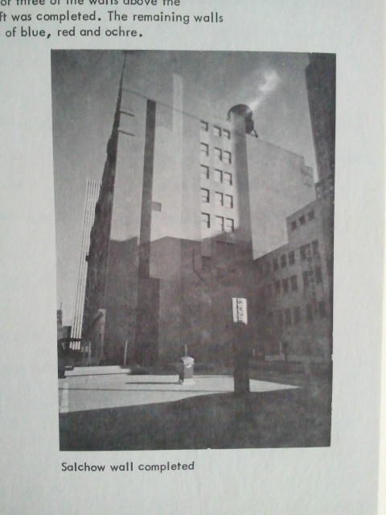

In the 1970s Carl Solway and Jack Boulton commissioned local artists to paint super graphics on the sides of buildings in downtown Cincinnati, OH. Forty years later, public art projects continue to be an important part of urban revitalization in neighborhoods throughout the city.
This narrative project was a collaboration by the 2011 Digital Design class at the University of Cincinnati, with the goal of recounting the impact of the Urban Walls project. My team created a motion piece that discusses the impact of public art and focus the super graphic designed by Gordon Salchow.
As part of our research, we visited the local library and found prints of the original wall designs, along with microfilm newspaper articles about Urban Walls. We also took photos of other super graphics and community art projects in downtown Cincinnati. These projects led us to local public art groups, including Artworks and Keep Cincinnati Beautiful.
 
